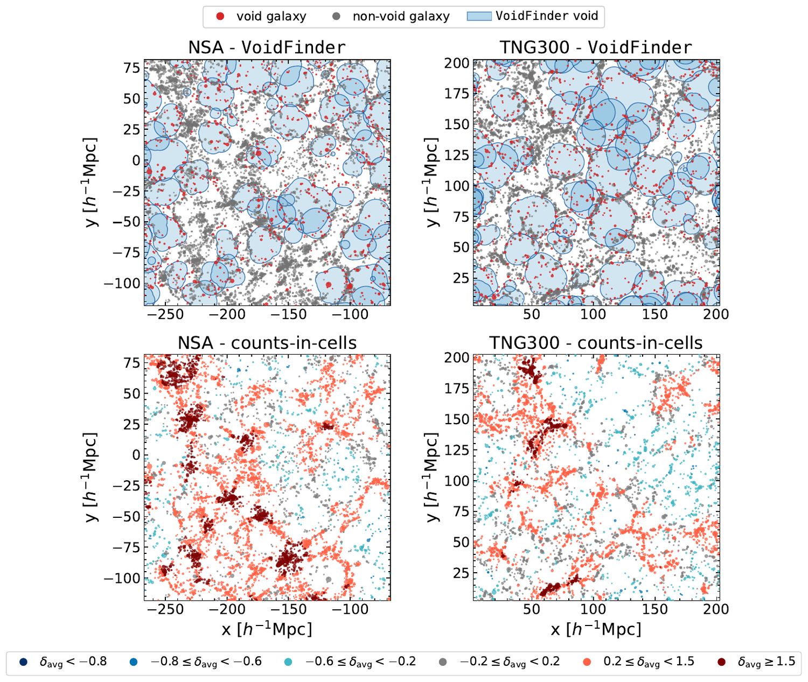
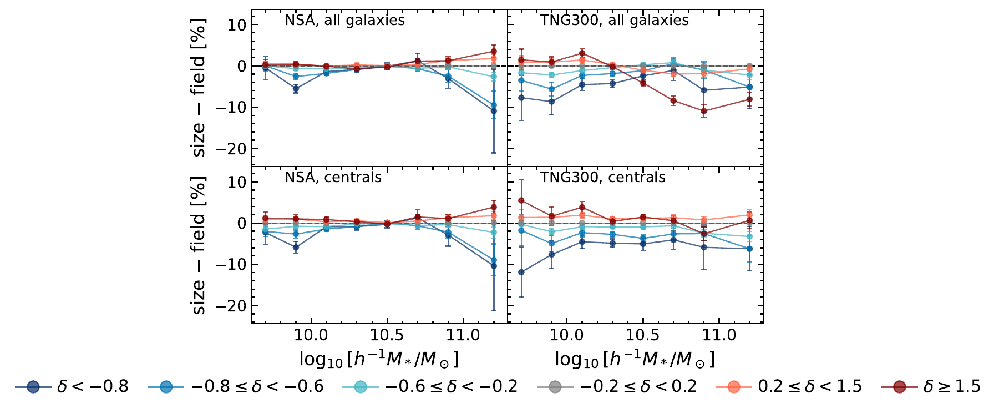
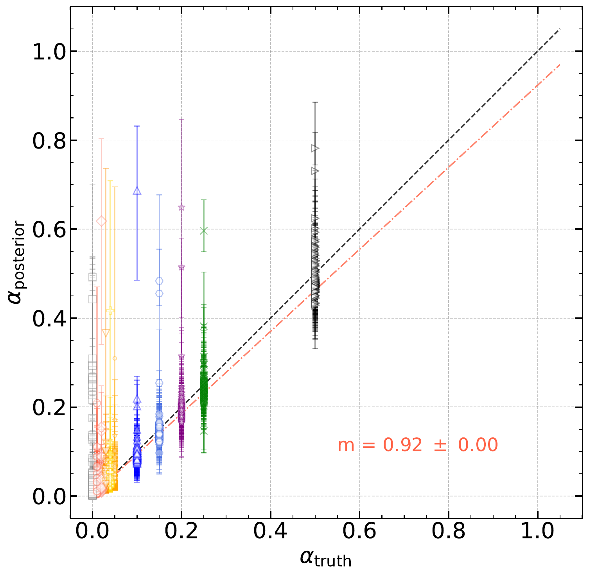
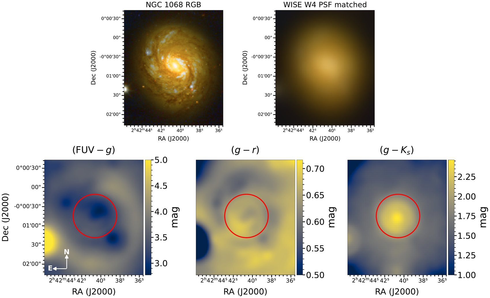
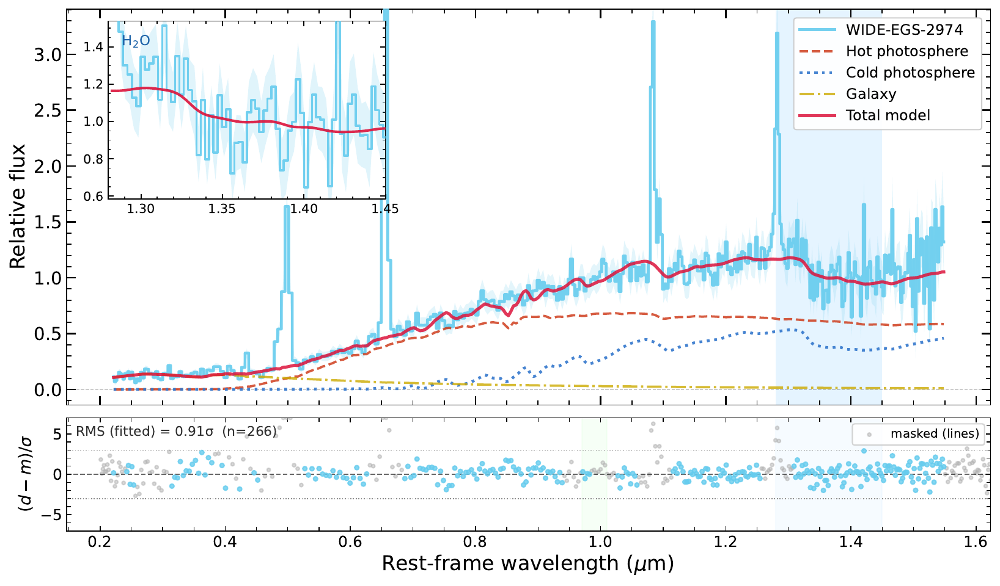
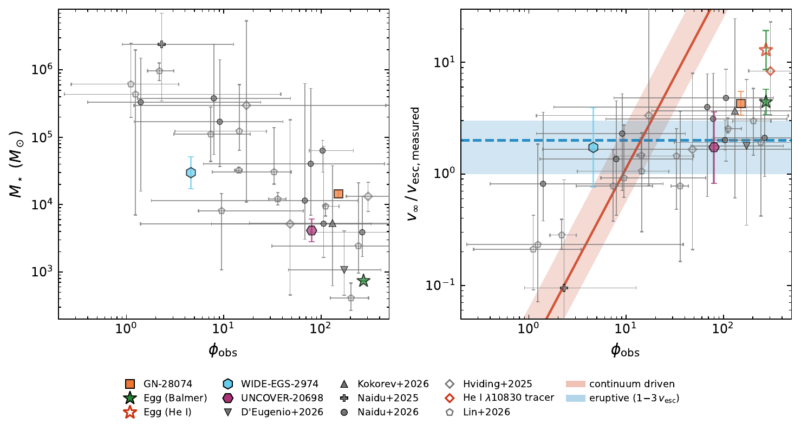
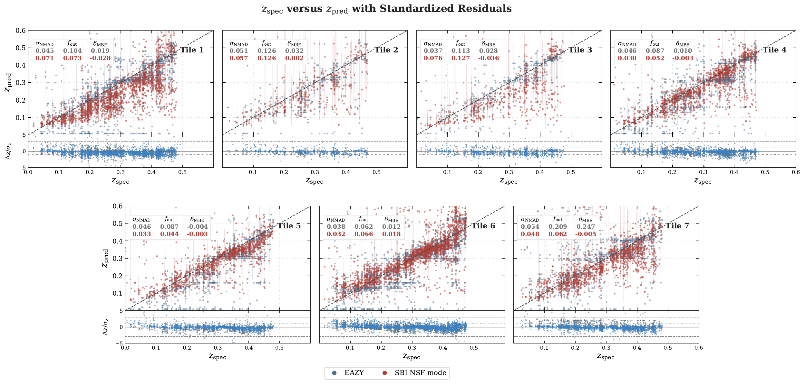
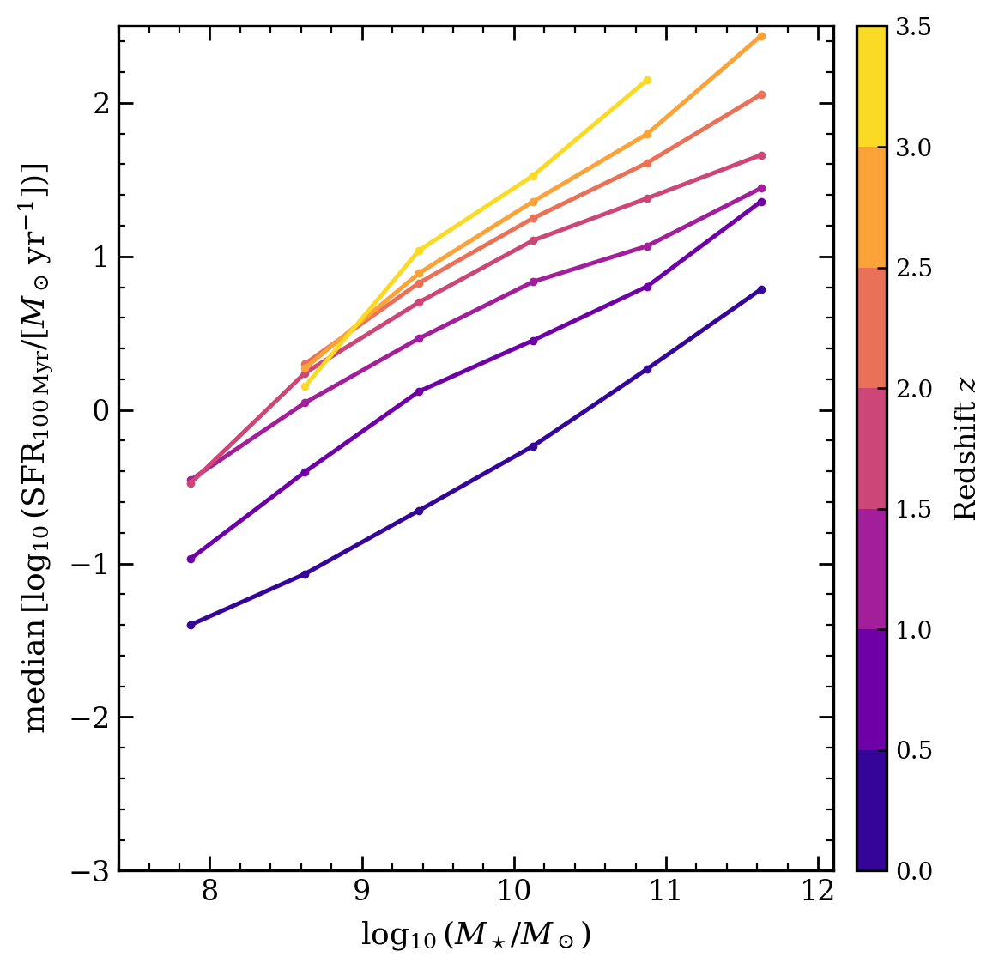
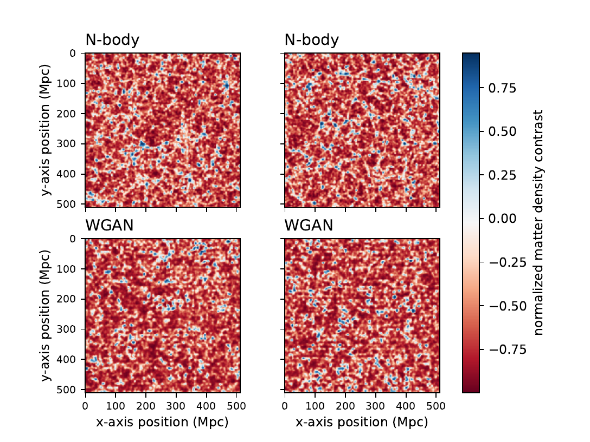

ORCiD
ORCiD
Research
My research asks how galaxies grow and change, and what their light can tell us about the stars, black holes, and perhaps even the technology inside them. I study galaxies in the emptiest places in the universe, search for signs of galaxy-spanning life, test whether the strange Little Red Dots that JWST discovered are newborn black holes, and use machine learning to do all of it at the scale of millions of galaxies. Click a topic below to expand it, or jump straight to any of these four.
Galaxy Evolution in Cosmic Underdensities
Cosmic voids are the emptiest places in the universe, vast regions tens of millions of light years across that contain almost nothing. The galaxies that do live inside them grow up in near isolation, which makes them a perfect natural experiment for asking how much of a galaxy's fate is set by its surroundings. My work compares millions of galaxies inside and outside of voids, using the Sloan Digital Sky Survey, the TNG300 simulation, and the HETDEX survey, to measure how this rarefied environment shapes their growth.

A slice through the local universe from our SDSS DR7 study. Blue circles are the voids that VoidFinder identifies, red dots are the galaxies that live inside them.
In our newest paper in this series, we measured the brightnesses, masses, colors, and sizes of every void galaxy in the completed Sloan Digital Sky Survey. We found that the most massive void galaxies are about 11% more compact than their counterparts elsewhere, and that the difference grows steadily as the voids get emptier. Galaxies grow their outskirts by colliding and merging with their neighbors, so this compactness is exactly what you would expect from galaxies that have spent their lives with nobody to run into.

The size difference between void galaxies and the field. The most massive galaxies in the emptiest voids (dark blue) are noticeably smaller than galaxies of the same mass elsewhere.
This builds on my dissertation work, where we mapped thousands of voids in the TNG300 simulation, traced how their density profiles evolve over ten billion years, and showed that void galaxies are far more likely to host actively feeding black holes than galaxies anywhere else. I am now extending these studies to the HETDEX survey, where we have built one of the largest void catalogs ever assembled.
Extragalactic SETI
If a civilization ever spread across its entire galaxy, the energy it used would have to leave as waste heat, a warm glow that telescopes can see in the infrared. In our most recent paper, we rebuilt extragalactic SETI as a forward-modeling problem. Rather than hunting for odd colors, we treat Dyson spheres, the swarms of collectors an advanced civilization might build around its stars, as one more ingredient of a galaxy's light, so the entire modern galaxy-modeling toolkit can join the search.

Our injection tests. We hide artificial Dyson sphere signals in the light of 129 real galaxies and our pipeline recovers them faithfully (the one-to-one line).
Those injection tests, shown above, prove that the machinery is calibrated and honest, recovering hidden signals down to civilizations using only a few percent of their galaxy's starlight. None of the 129 real galaxies preferred a Dyson sphere component, which let us place the first galaxy-by-galaxy limits on how much starlight could be harvested this way. We also found that the quiet outskirts of dust-free elliptical galaxies are the best hunting grounds for future searches.

The nearby galaxy M77 from the ultraviolet to the infrared. Masking its bright center (red circle) lets us search the outskirts where an active black hole cannot hide a signal.
The search is now growing in every direction. We are mapping nearby galaxies pixel by pixel to build the first resolved maps of where waste heat could hide, we organized a workshop on whether such technology could even be built around the supermassive black holes at the centers of galaxies, and our null result seeds the machine learning search described below, which will extend these limits to millions of galaxies.
Quasi-stars and Little Red Dots
The Little Red Dots are a population of small, red objects that JWST discovered shining in the first billion years of the universe, and nobody knows what they are. In this paper series, we test the idea that they are quasi-stars, newborn black holes growing inside giant star-like envelopes. If that is true, their light should carry the same fingerprints as ordinary stellar atmospheres, which means we can weigh them with the tools stellar astronomers have used for a century.

A cartoon of a quasi-star. A newborn black hole grows inside a giant star-like envelope whose atmosphere, winds, and chromosphere all leave fingerprints in its light.
Fitting stellar atmosphere models to these objects, we found that every Little Red Dot we weighed shines brighter than its own gravity should allow, and that their envelopes hold hundreds to tens of thousands of suns, far below what earlier estimates implied. That measurement dissolves the puzzle of impossibly overmassive black holes in the early universe, and it predicts the winds each object should drive, a prediction the fastest outflows already confirm. All of our spectral fits are available on GitHub.

Our fit to WIDE-EGS-2974, the water dot. Two stellar photospheres, one hot and one cool, reproduce its spectrum, with the cool one forming water in the quasi-star's wind.
To understand how these objects live and die, we are now running full 3D simulations of quasi-star atmospheres, like the one below, that follow how gas, light, and magnetic fields push on one another. Together with the spectra, they suggest a life story in which Little Red Dots begin as steady, continuum driven sources and end by erupting away their outer envelopes, leaving behind the black holes that grow into today's quasars.

Our eruptive wind prediction. The measured outflow speeds of the population (right) sit at one to three times each object's escape speed, the band where eruptive mass loss takes over.
A 3D radiative magnetohydrodynamics simulation we made of a quasi-star shining at its Eddington limit. The video shows the density, temperature, magnetic fields, and winds of its envelope.
Machine Learning Applications to Astrophysics
Understanding a galaxy's light usually means fitting it with detailed physical models, and a single galaxy can take days of computer time. Modern surveys contain millions of galaxies, so my students and I train neural networks that learn these models and then produce the same answers in a fraction of a second, a technique called simulation-based inference. Our network turns a fit that once took days into one that takes 0.06 seconds, a speedup of more than a million, while still reporting honest uncertainties.

Galaxy distances from our neural network (red) and the standard tool EAZY (blue) across the SHELA field. Ours lands closer to the truth with fewer catastrophic misses.
With my student Lishan Shi, we applied this to the SHELA field of the HETDEX survey, where our network outperforms EAZY, the field's standard tool for measuring galaxy distances. We then measured the properties of four million galaxies in one sweep, recovering the well-known relation between a galaxy's mass and how quickly it forms stars across an unprecedented sample.

The star forming main sequence, how quickly galaxies of each mass form stars, recovered by our network for four million SHELA galaxies from today (purple) back to redshift 3.5 (yellow).
My interest in this began in graduate school, when we trained a generative adversarial network to dream up maps of the cosmic web that even professional astronomers struggle to tell apart from real simulations. The same machinery now powers what comes next, a neural network that will search ten million galaxies for the Dyson sphere waste heat described above at essentially no cost per galaxy.

Which maps are real? The top row comes from an N-body simulation of the universe and the bottom row is dreamed up by our neural network.